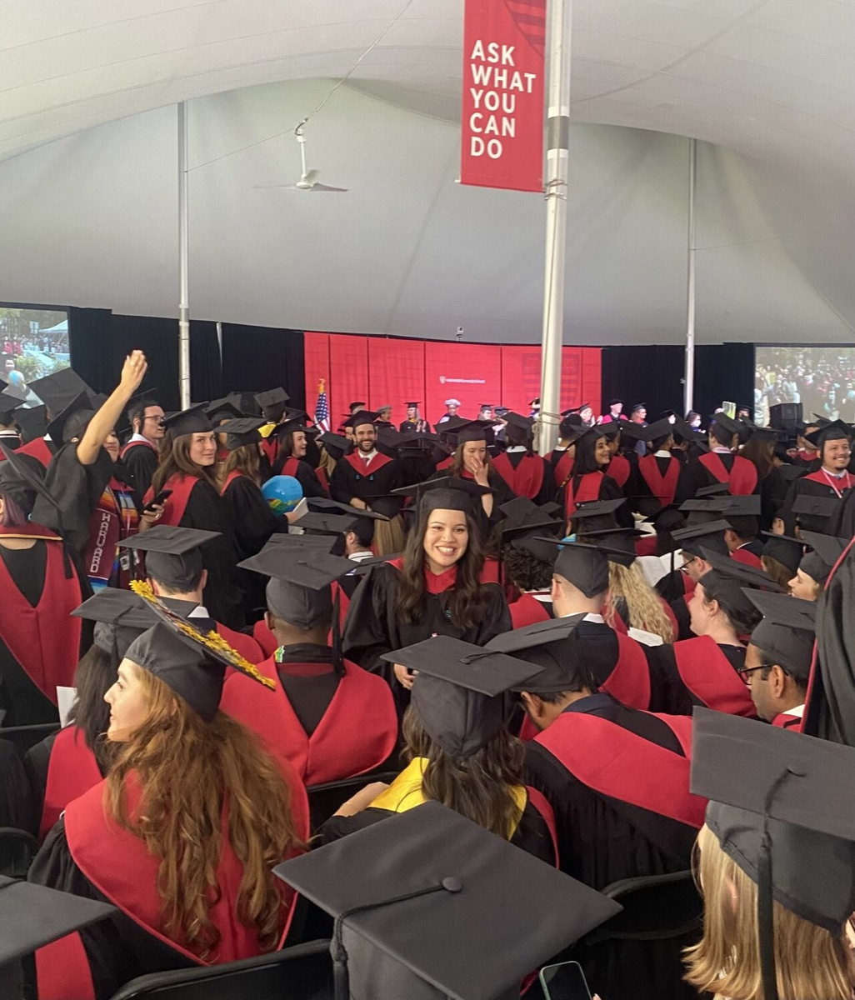

Role title
One or two lines on what you did and the tools you used.

Public servant · Policy, climate and equity
I am a passionate public servant with 5+ years of experience in policy development and implementation, committed to driving positive societal change through innovation and creative thinking. I hold a Master’s in Public Policy (MPP) from the Harvard Kennedy School, where I specialized in areas like climate policy, economic development, infrastructure, and micro-mobility, with a thesis focused on app-based food delivery in Boston. I am also a proud alum of the University of San Francisco.
Throughout my career, I’ve led impactful projects across women’s rights, sustainability, infrastructure, refugees, behavioral economics, and the environment. My skills span data analysis (R, STATA, SPSS), policy design, survey design, and project management. I apply multidisciplinary approaches to complex problems, from leveraging behavioral economics to crafting policy that incorporates equity and sustainability.
I am driven by a desire to build a more inclusive and sustainable future, and I continue to seek opportunities to leverage my diverse skills and experiences to address pressing global challenges.
One or two lines on what you did and the tools you used.

GrantWell is an AI tool that helps organizations find federal grants and draft applications. It was built for Massachusetts municipalities and under-resourced organizations, which received less than a third of the federal grants they were eligible for in 2025. Since its March 2026 launch, 350 users across 200 communities have registered.

I attended the signing of an executive order to create an office for federal funds and infrastructure, to help the state pursue federal investment in infrastructure, climate and equity projects.

Graduating with my Master in Public Policy, where I focused on climate policy, economic development, infrastructure and micro-mobility.
As the Public Policy Fellow at San Francisco’s Department on the Status of Women, I led the research for the city’s first comprehensive analysis of public spaces named after people. It found that only 13 percent of parks, buildings, streets and art honor women.
May 2023
Concentration in Local Economic Development: Social and Urban Policy. My thesis studied app-based food delivery and micro-mobility in Boston.
Right after graduating, I joined the Commonwealth of Massachusetts to help the state pursue federal funding.
Oct 2023 – Oct 2025
Directed policy for the state's federal funds office and secured $8 billion across infrastructure, climate, health and equity projects. I also drafted executive orders, policy memos and legislation for the Governor's office.
Within that role, I turned grant writing into a tool that other teams could use.
2025
I led the development and pilot of an AI tool that helps Massachusetts municipalities and state agencies find and draft competitive federal and state grant applications.
That experience led to my current role.
Dec 2025 – Present
I lead strategic communications and media relations for the department's programs, manage its public information during emergencies, and track grant opportunities for its executive office.